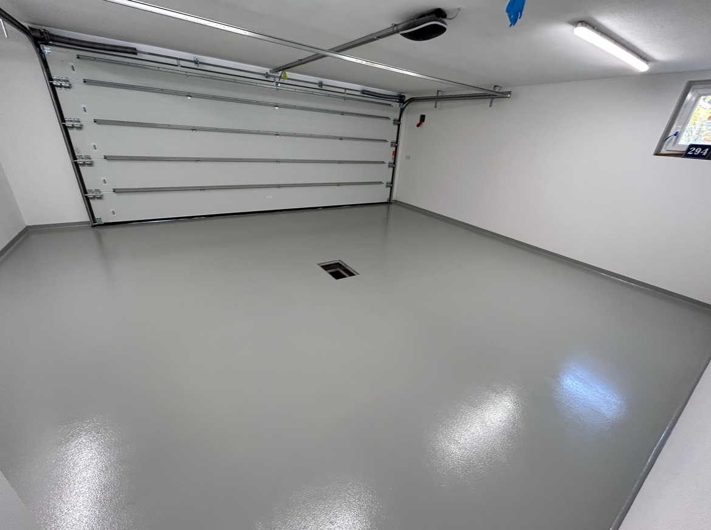
Garagenbeschichtung
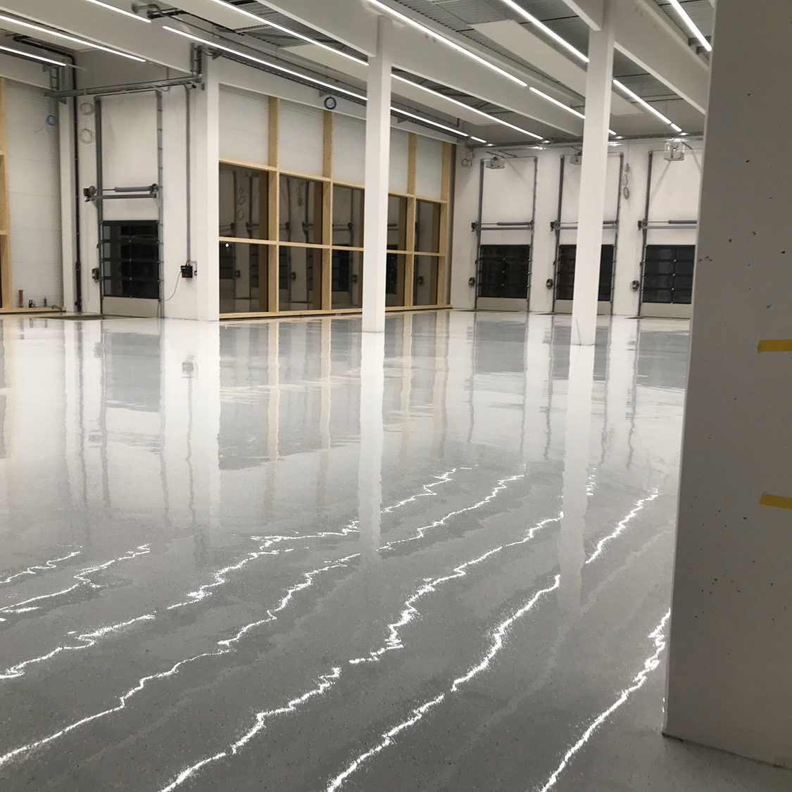
Industrieböden
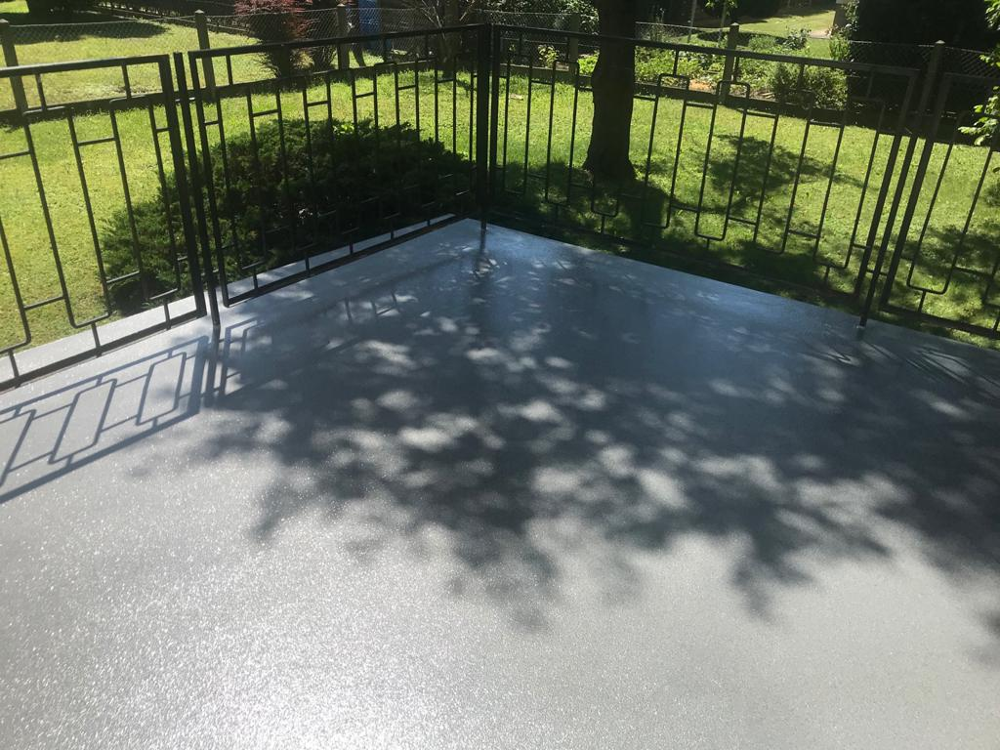
Terassen Beschichtung

Wohnraum & Bad
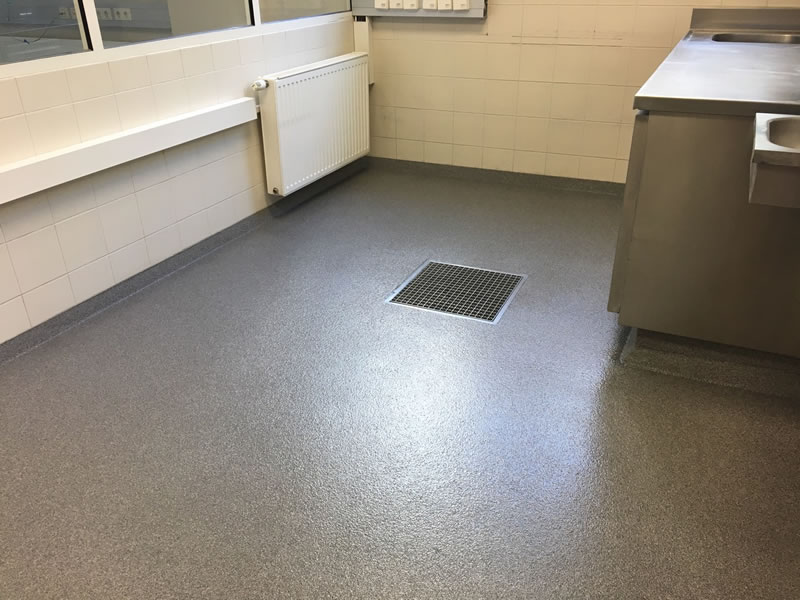
Küche
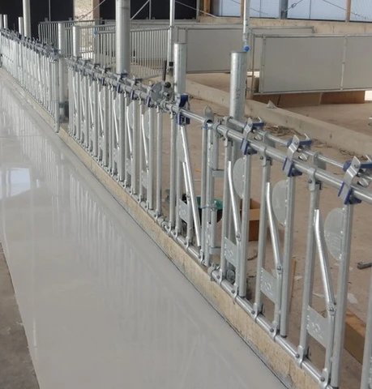
Tierstallbeschichtung
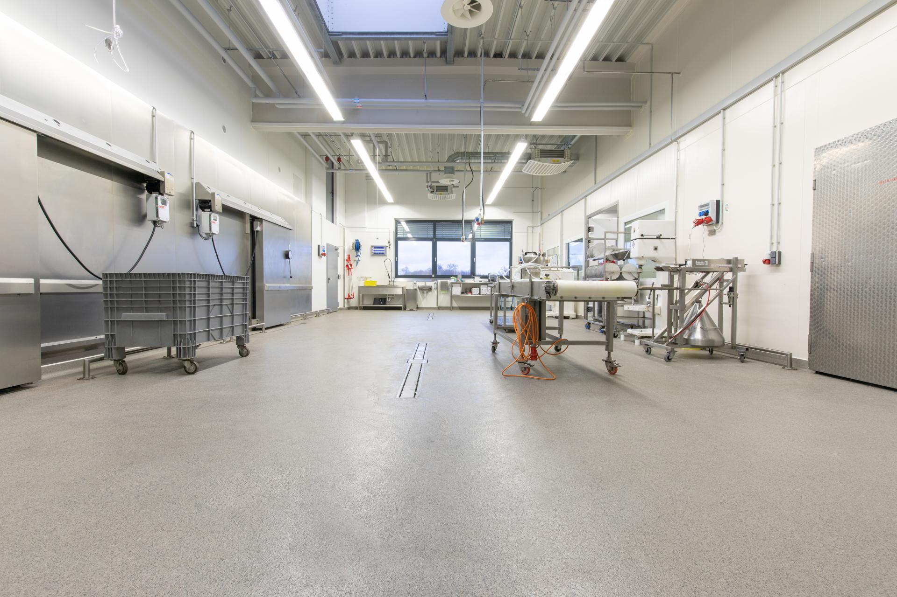
Lebensmittelindustrie Beschichtung
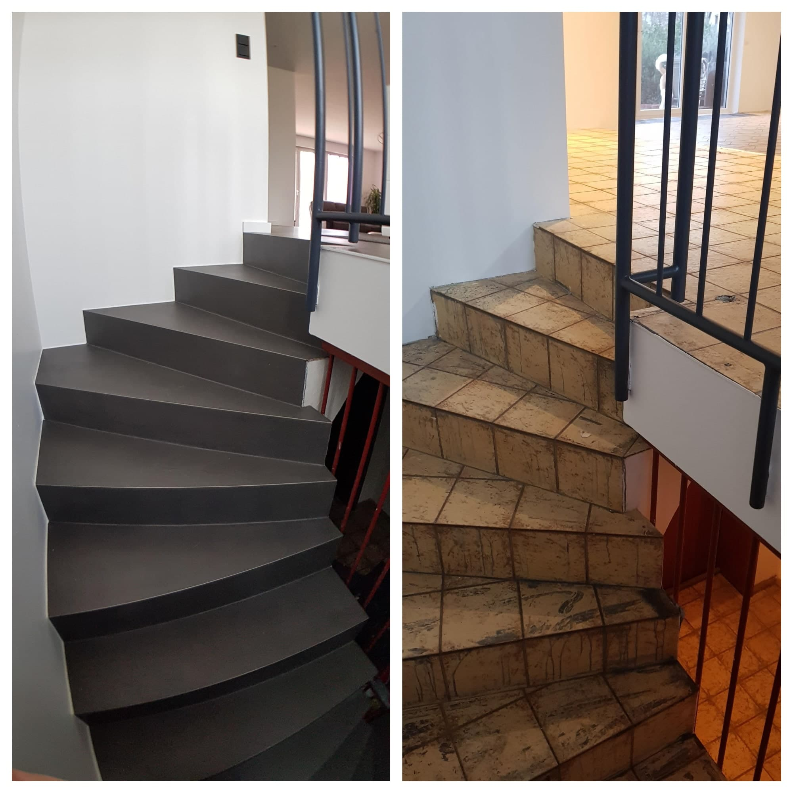
Treppen und Stufen
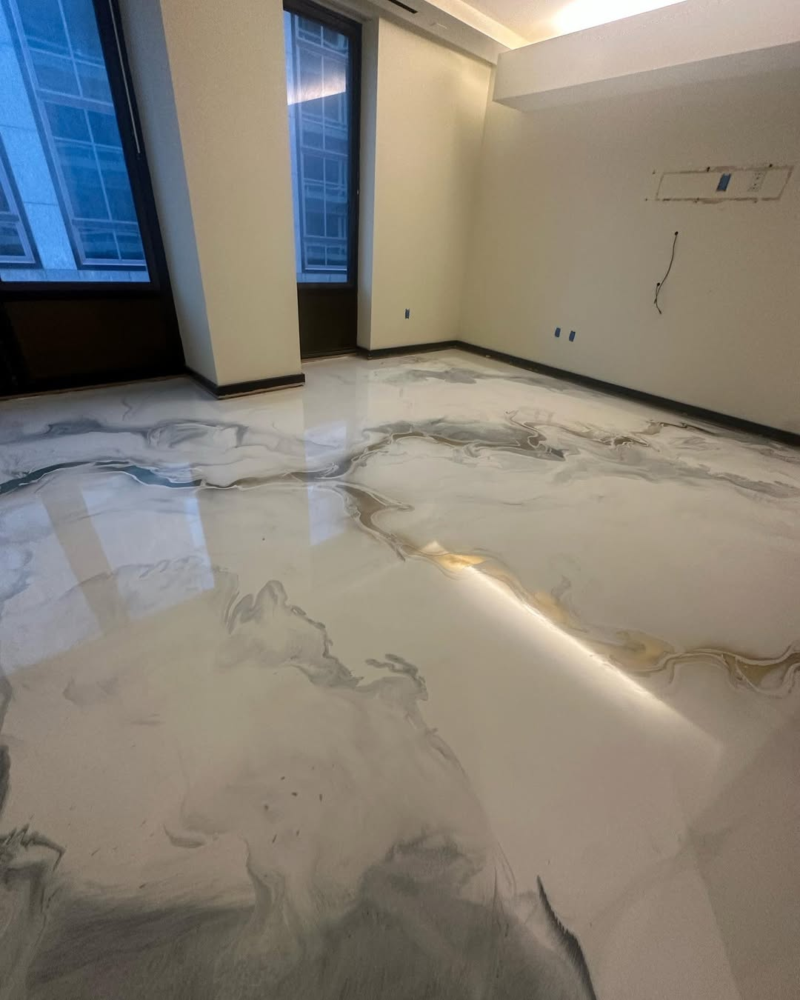
Designböden
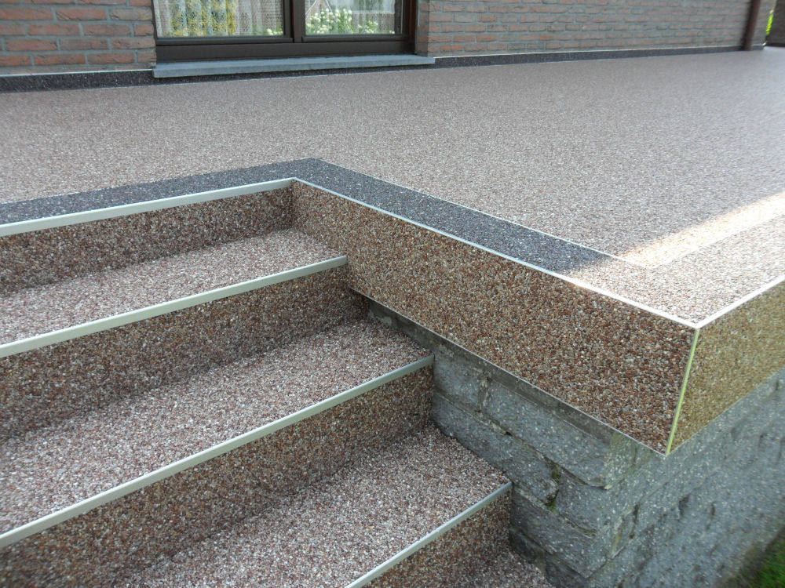
Steinteppiche
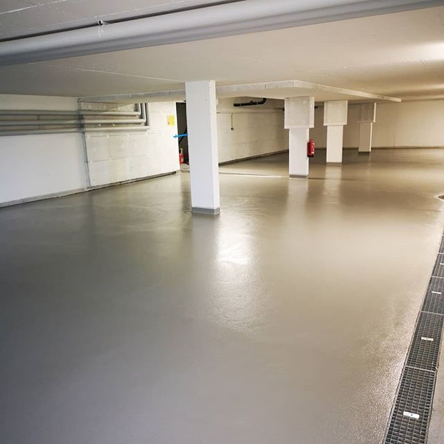
Tiefgaragen
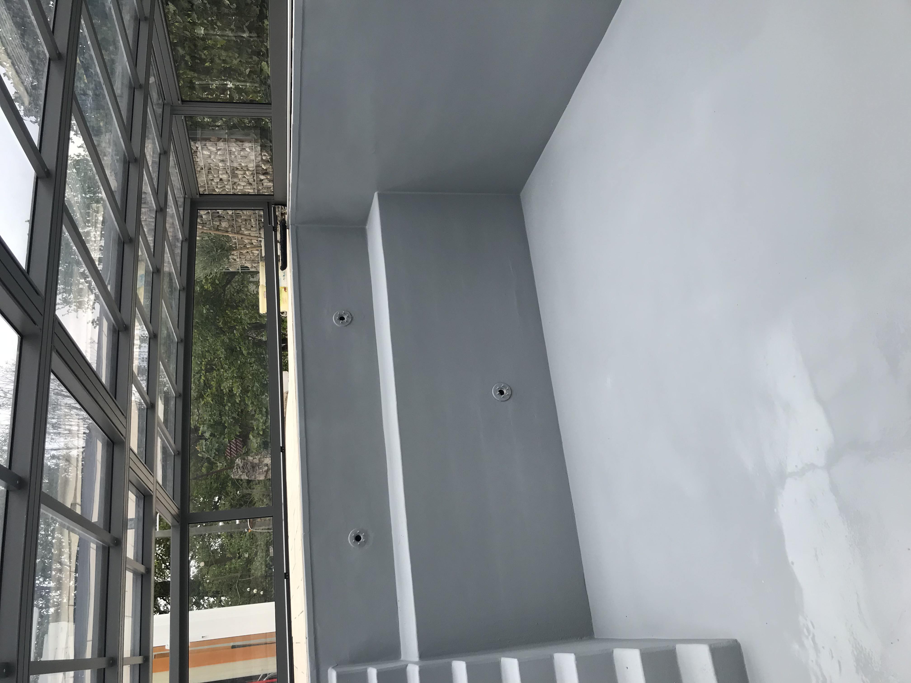
Poolbeschichtung